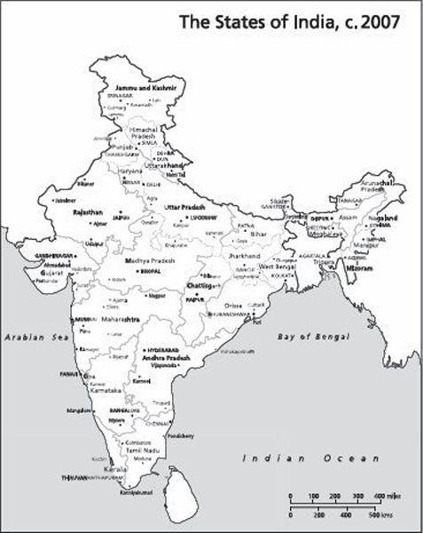

Over the years English has confirmed, consolidated and deepened its position as the language of the pan-Indian elite. The language of the colonizers has, in independent India, become the language of power and prestige, the language of individual as well as social advancement. As the historian Sarvepalli Gopal observes, ‘that knowledge of English is the passport for employment at higher levels in all fields, is the unavoidable avenue to status and wealth and is mandatory to all those planning to migrate abroad, has meant a tremendous enthusiasm since independence to study it’. But, as Gopal also writes, English ‘may be described as the only non-regional language in India. It is a link language in a more than administrative sense, in that it counters blinkered provincialism.’37
Those, like Nehru and Rajaji, who sought to retain English, sensed that it might help consolidate national unity and further scientific advance. That it has done, but largely unanticipated has been its role in fuelling economic growth. For behind the spectacular rise of the software industry lies the proficiency of Indian engineers in English.
If India is roughly 50 per cent democratic, it is approximately 80 per cent united. Some parts of Kashmir and the north-east are under the control of insurgents seeking political independence. Some forested districts in central India are in the grip of Maoist revolutionaries. However, these areas, large enough in themselves, constitute considerably less than a quarter of the total land mass claimed by the Indian nation.
Over four-fifths of India, the elected government enjoys a legitimacy of power and authority. Throughout this territory the citizens of India are free to live, study, take employment and invest in businesses.
The economic integration of India is a consequence of its political integration. They act in a mutually reinforcing loop. The greater the movement of goods and capital and people across India, the greater the sense that this is, after all, one country. In the first decades of Independence it was the public sector that did most to further this sense of unity. In plants such as the great steel mill in Bhilai, Andhras laboured and lived alongside Punjabis and Gujaratis, fostering appreciation of other tongues, customs and cuisine, while underlining the fact that they were all part of the same nation. As the anthropologist Jonathan Parry remarks, in the Nehruvian imagination ‘Bhilai and its steel plant were seen as bearing the torch of history, and as being as much about forging a new kind of society as about forging steel’. The attempt was not unsuccessful; among the children of the first generation of workers, themselves born and raised in Bhilai, provincial loyalties were superseded by a more inclusive patriotism, a ‘more cosmopolitan cultural style’.38
More recently, it has been the private sector which has, if with less intent, furthered the process of national integration. Firms headquartered in Tamil Nadu set up cement plants in Haryana; doctors born and educated in Assam establish clinics in Bombay. Many of the engineers in Hyderabad’s IT industry come from Bihar. The migration is not restricted to the professional classes; there are barbers from Uttar Pradesh working in the city of Bangalore, as well as carpenters from Rajasthan. However, it must be said that the flow is not symmetrical. While the cities and towns that are ‘booming’ become ever more cosmopolitan, economically laggard states sink deeper into provincialism.
Apart from elements of politics and economics, cultural factors have also contributed to national unity. Pre-eminent here is the Hindi film. This is the great popular passion of the Indian people, watched and followed by Indians of all ages, genders, castes, classes, religions and linguistic groups.
Each formally recognized state of the Union, says the lyricist Javed Akhtar, ‘has its different culture, tradition and style. In Gujarat, you have one kind of culture, then you go to Punjab, you have another, and the same applies in Rajasthan, Bengal, Orissa or Kerala. Then Akhtar adds, ‘There is one more state in this country, and that is Hindi cinema.’39
This is a stunning insight which asks to be developed further. As a separate state of India, Hindi cinema acts as a receptacle for all that (in a cultural sense) is most creative in the other states. Thus its actors, musicians, technicians and directors come from all parts of India. Thus also it draws ecumenically from cultural forms prevalent in different regions. For example a single song may feature both the Punjabi folk dance called the bhangra and its Tamil classical counterpart, bharatan-atyam.
Having borrowed elements from here, there and everywhere, the Hindi film then sends the synthesized product out for appreciation to the other states of the Union. The most widely revered Indians are film stars. Yet cinema does not merely provide Indians with a common pantheon of heroes; it also gives them a common language and universe of discourse. Lines from film songs and snatches from film dialogue are ubiquitously used in conversations in schools, colleges, homes and offices – and on the street. Because it is one more state of the Union, Hindi cinema also speaks its own language – one that is understood by all the others.